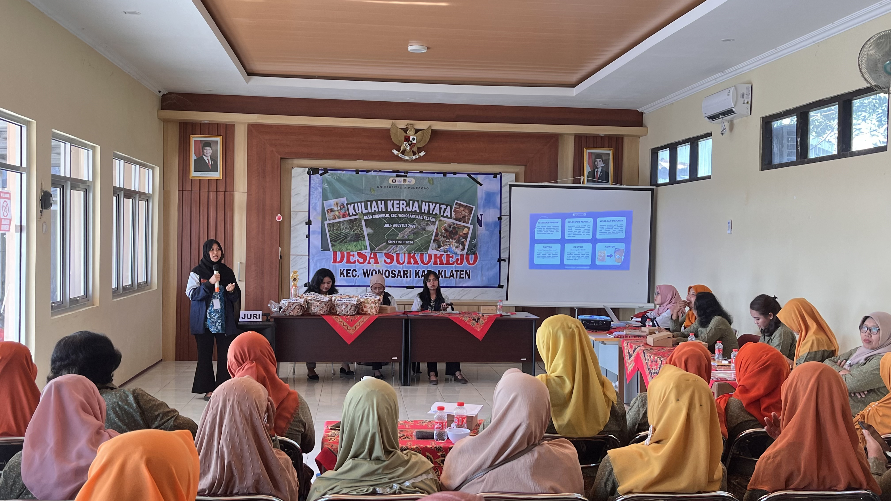
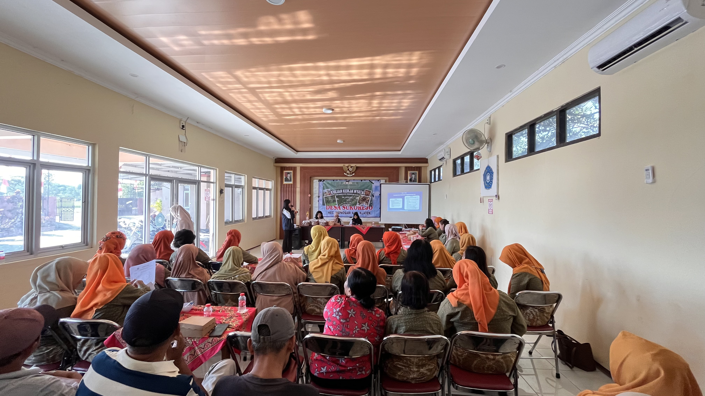
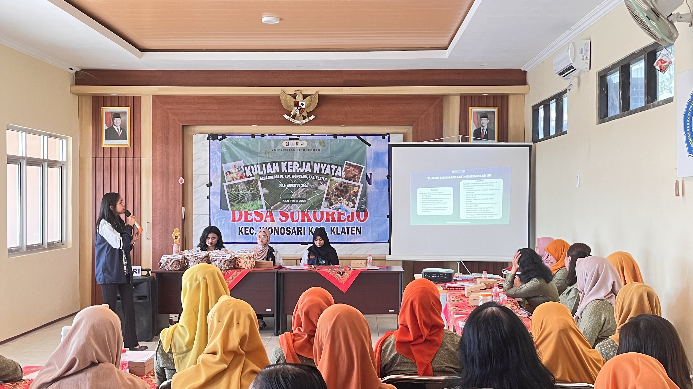

Sabtu, 25 Juli 2026

Berita Desa Sukorejo
Klaten — Mahasiswa Kuliah Kerja Nyata Reguler (KKN-R) Tim II Universitas Diponegoro (UNDIP) Desa Sukorejo melaksanakan program kerja multidisiplin bertajuk Sosialisasi Penguatan Ekosistem UMKM melalui Digitalisasi, Pendataan, Legalitas, Manajemen, Branding, dan Efisiensi Energi di Balai Desa Sukorejo pada Sabtu, 25 Juli 2026. Kegiatan ini menjadi salah satu wujud nyata kontribusi mahasiswa dalam mendukung pembangunan ekonomi desa yang berkelanjutan. Program ini juga dirancang sebagai bentuk pengabdian kepada masyarakat yang berfokus pada pemberdayaan pelaku UMKM secara menyeluruh.
Universitas Diponegoro sebagai perguruan tinggi yang berkomitmen pada pengabdian kepada masyarakat secara aktif mendorong berbagai program berbasis Sustainable Development Goals (SDGs), termasuk penguatan sektor UMKM sebagai pilar ekonomi lokal. Melalui kegiatan ini, mahasiswa KKN berupaya menghadirkan solusi yang aplikatif dan relevan dengan kebutuhan masyarakat Desa Sukorejo. Pendekatan multidisiplin yang digunakan diharapkan mampu menjawab berbagai tantangan yang dihadapi pelaku UMKM di era modern.
Kegiatan sosialisasi ini dihadiri oleh pelaku UMKM Desa Sukorejo, Kader PKK, serta perangkat desa. Antusiasme peserta terlihat dari partisipasi aktif selama sesi pemaparan berlangsung. Para peserta juga menunjukkan ketertarikan tinggi terhadap materi yang disampaikan, khususnya terkait pengembangan usaha berbasis digital.
Rangkaian kegiatan diawali dengan penyampaian materi mengenai legalitas usaha oleh Talitha dari program studi S-1 Hukum. Dalam sesi ini, peserta diberikan pemahaman mengenai pentingnya kepemilikan izin usaha resmi seperti Nomor Induk Berusaha (NIB) sebagai langkah awal untuk meningkatkan kredibilitas usaha. Selain itu, dijelaskan pula manfaat legalitas dalam memperluas akses terhadap program pemberdayaan pemerintah serta meningkatkan kepercayaan konsumen.
Selanjutnya, Naila memaparkan materi terkait pemasaran produk, dengan menekankan pentingnya strategi pemasaran yang adaptif di era digital. Peserta dikenalkan pada konsep branding, pemanfaatan media sosial, serta teknik komunikasi pemasaran yang efektif. Materi ini diharapkan mampu membantu pelaku UMKM dalam meningkatkan daya saing produk di pasar yang semakin kompetitif.
Materi berikutnya disampaikan oleh Emininta dari program studi S-1 Keselamatan dan Kesehatan Kerja mengenai keamanan dalam bekerja. Sesi ini memberikan edukasi terkait pentingnya penerapan keselamatan kerja dalam proses produksi. Selain itu, peserta juga diberikan pemahaman mengenai penggunaan alat yang aman serta upaya pencegahan risiko kecelakaan kerja.
Sebagai penutup, Adilla menyampaikan materi mengenai digitalisasi laporan keuangan. Peserta diperkenalkan pada pentingnya pencatatan keuangan yang sistematis dan berbasis digital. Hal ini bertujuan untuk mempermudah pengelolaan arus kas serta mendukung pengambilan keputusan usaha yang lebih tepat.
Melalui kegiatan ini, mahasiswa KKN UNDIP berharap pelaku UMKM di Desa Sukorejo dapat meningkatkan kapasitas dalam mengelola usaha secara profesional, inovatif, dan berkelanjutan. Penguatan ekosistem UMKM melalui pendekatan multidisiplin ini diharapkan mampu mendorong pertumbuhan ekonomi desa. Selain itu, kegiatan ini juga diharapkan dapat meningkatkan kesejahteraan masyarakat secara berkelanjutan.


